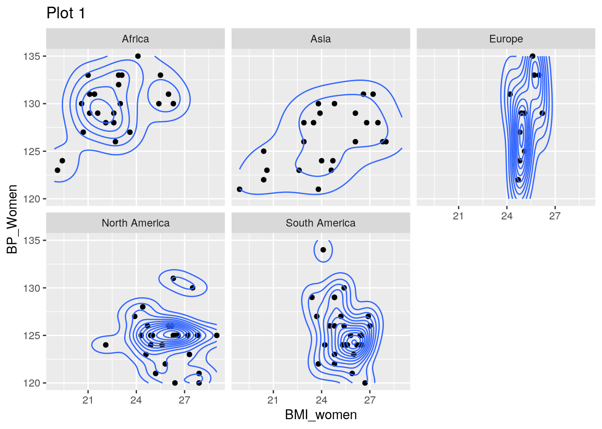
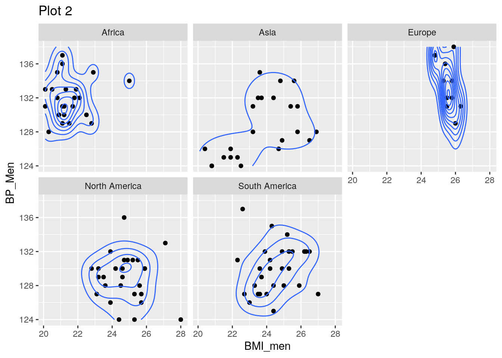
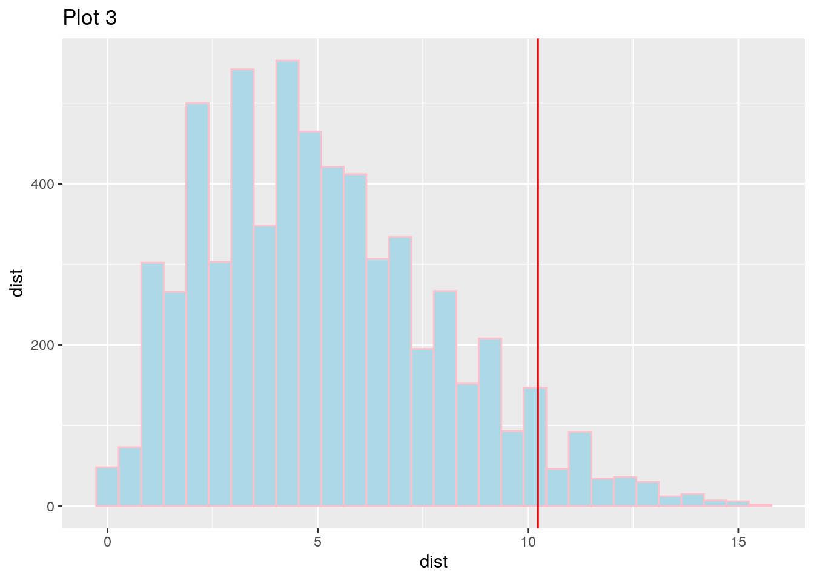
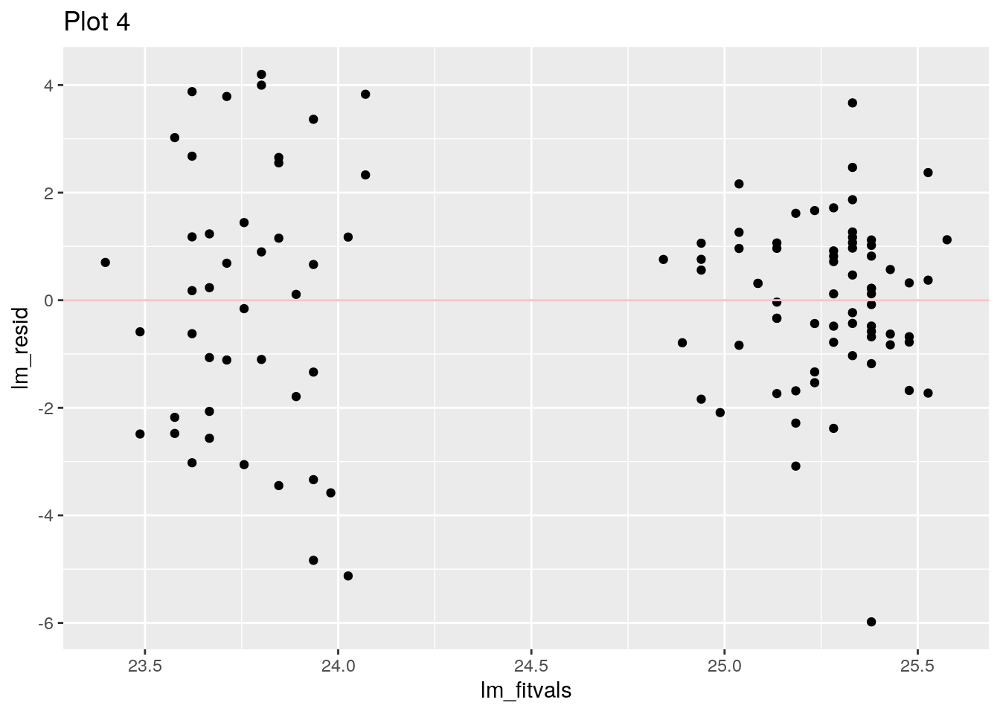
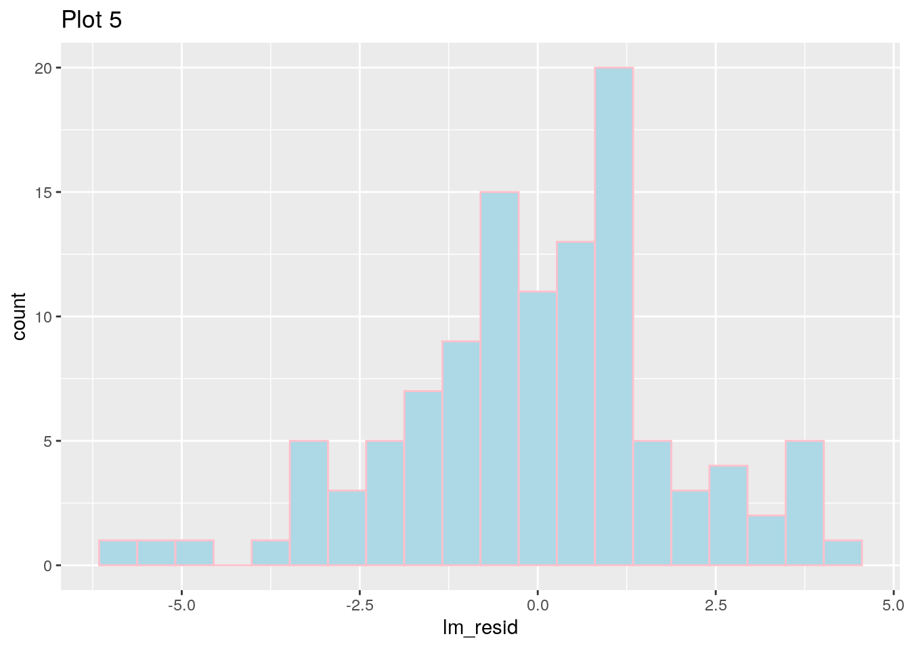
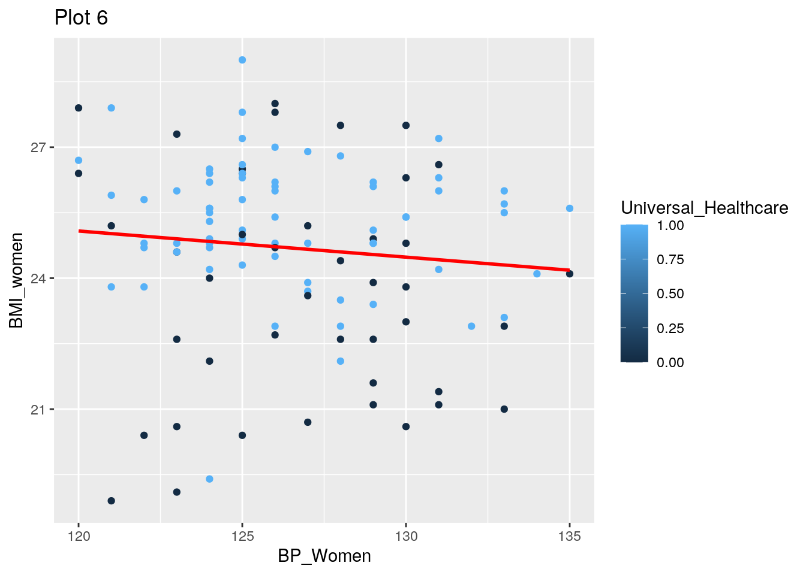
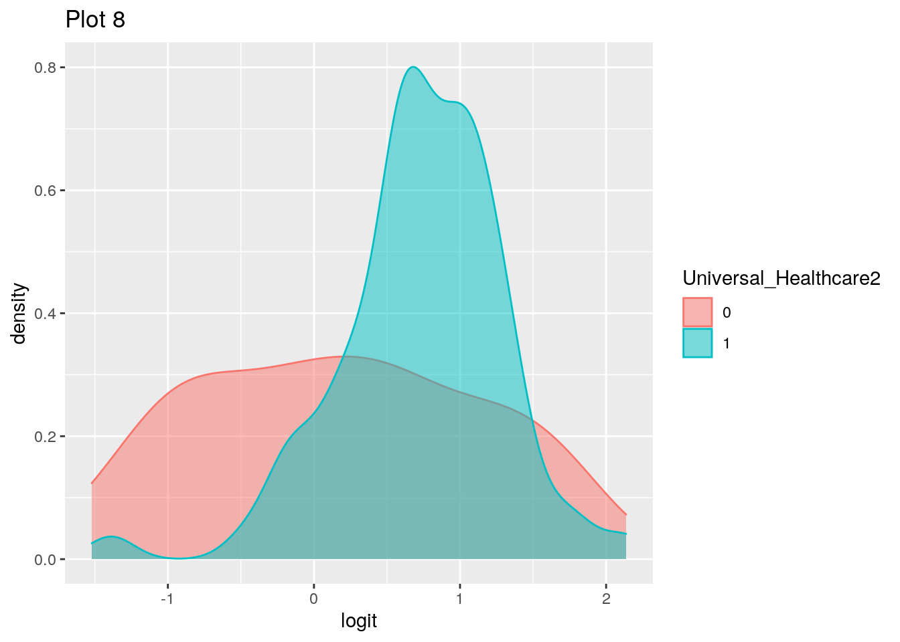
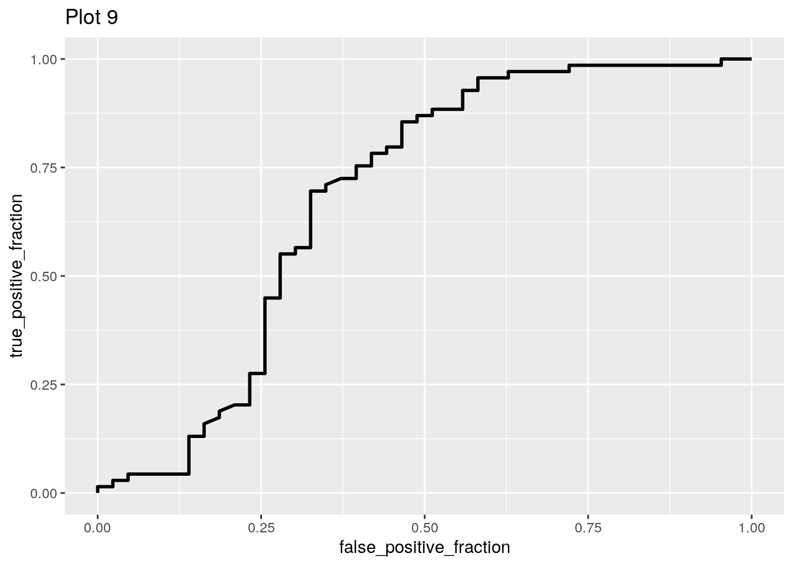

northamerica <- healthy %>% filter(country == c("Antigua and Barbuda", "Bahamas", "Bermuda", "Belize", "Canada", "Costa Rica", "Cuba", "Dominica", "Dominican Republic", "El Salvador", "Grenada", "Guatemala", "Haiti", "Honduras", "Jamaica", "Mexico", "Nicaragua", "Panama","St. Kitts and Nevis ", "St. Lucia", "St. Vincent and the Grenadines", "Trinidad and Tobago", "United States")) %>% mutate(country = "North America")## Warning in country == c("Antigua and Barbuda", "Bahamas", "Bermuda", "Belize", :
## longer object length is not a multiple of shorter object lengthsouthamerica <- healthy %>% filter(country == c("Equatorial Guinea", "Argentina", "Ecuador", "Bolivia", "Brazil", "Chile", "Colombia", "Guyana", "Paraguay", "Peru", "Suriname", "Uruguay", "Venezuela")) %>% mutate(country = "South America") ## Warning in country == c("Equatorial Guinea", "Argentina", "Ecuador",
## "Bolivia", : longer object length is not a multiple of shorter object lengtheurope <- healthy %>% filter(country == c("Albania", "Andorra", "Armenia", "Austria", "Azerbaijan", "Belarus", "Belgium", "Bosnia and Herzegovina", "Bulgaria", "Croatia", "Cyprus", "Czechia", "Denmark", "Estonia", "Finland", "France", "Georgia", "Germany", "Greece", "Hungary", "Ireland", "Iceland", "Italy", "Kazakhstan", "Kosovo", "Latvia", "Liechtenstein", "Lithuania", "Luxembourg", "Malta", "Moldova", "Monaco", "Montenegro", "Netherlands", "North Macedonia", "Norway", "Portugal", "Poland", "San Marino", "Serbia", "Slovakia", "Slovenia", "Spain", "Sweeden", "Switzerland", "Turkey", "Ukrain", "United Kingdom")) %>% mutate(country = "Europe")
africa <- healthy %>% filter(country ==c("Algeria", "Angola Benin", "Botswana", "Burkina Faso", "Benin", "Cameroon", "Central African Republic", "Chad", "Comoros", "Congo", "Cote d'Ivoire", "Congo, Rep.", "Djibouti", "Egypt", "Eswatini", "Ethiopia", "Gabon", "Gambia", "Ghana", "Guinea","Guinea-Bissau", "Kenya", "Lesotho", "Liberia", "Madagascar", "Malawi", "Mali", "Mauritania", "Mauritius", "Morocco", "Namibia", "Niger", "Nigeria", "Rwanda", "Sao Tome and Principe", "Senegal","Sierra Leone", "Somalia", "South Africa", "Sudan", "Tanzania", "Togo", "Tunisia", "Uganda", "Zambia","Zimbabwe", "Mozambique")) %>% mutate(country = "Africa")## Warning in country == c("Algeria", "Angola Benin", "Botswana", "Burkina Faso", :
## longer object length is not a multiple of shorter object lengthasia <- healthy %>% filter(country == c("Afghanistan", "Armenia", "Azerbaijan", "Bahrain", "Bangladesh", "Bhutan", "Brunei", "Cambodia",
"China", "Cyprus", "Georgia", "India", "Indonesia", "Iran", "Iraq", "Israel", "Japan", "Jordan", "Kazakhstan", "Kuwait", "Kyrgyzstan", "Laos", "Lebanon", "Malaysia", "Maldives", "Mongolia", "Myanmar", "Nepal", "North Korea", "Oman", "Pakistan", "Palestine",
"Philippines", "Qatar", "Russia", "Saudi Arabia", "Singapore", "South Korea", "Sri Lanka", "Syria", "Taiwan", "Tajikistan", "Thailand",
"Timor-Leste", "Turkey", "Turkmenistan", "United Arab Emirates", "Uzbekistan", "Vietnam", "Yemen")) %>% mutate(country = "Asia")
c1 <- full_join(europe, southamerica)## Joining, by = c("country", "year", "BMI_men", "BMI_women", "BP_Men", "BP_Women", "Calories", "Universal_Healthcare")c2 <- full_join(c1, northamerica)## Joining, by = c("country", "year", "BMI_men", "BMI_women", "BP_Men", "BP_Women", "Calories", "Universal_Healthcare")c3 <- full_join(c2, africa)## Joining, by = c("country", "year", "BMI_men", "BMI_women", "BP_Men", "BP_Women", "Calories", "Universal_Healthcare")countries <- full_join(c3,asia)## Joining, by = c("country", "year", "BMI_men", "BMI_women", "BP_Men", "BP_Women", "Calories", "Universal_Healthcare")healthy <- healthy %>% drop_na()
countries <- countries %>% drop_na()
head(countries)## # A tibble: 6 x 8
## country year BMI_men BMI_women BP_Men BP_Women Calories Universal_Healthcare
## <chr> <chr> <dbl> <dbl> <dbl> <dbl> <dbl> <dbl>
## 1 Europe 1999 25.5 25.1 132 129 2800 1
## 2 Europe 2002 26.3 25.1 131 125 3750 1
## 3 Europe 2002 25.8 26 132 133 2900 1
## 4 Europe 1983 25.4 25.6 136 135 3610 1
## 5 Europe 2002 25.5 24.7 131 122 3370 1
## 6 Europe 1983 24.8 24.2 137 131 3460 1bpm <- healthy$BP_Men
bmi <- healthy$BMI_men
res.man <- manova(cbind(BP_Men, BMI_men, BMI_women, BP_Women, Calories) ~ Universal_Healthcare, data = healthy)
summary(res.man)## Df Pillai approx F num Df den Df Pr(>F)
## Universal_Healthcare 1 0.28169 350.43 5 4468 < 2.2e-16 ***
## Residuals 4472
## ---
## Signif. codes: 0 '***' 0.001 '**' 0.01 '*' 0.05 '.' 0.1 ' ' 1## Response BP_Men :
## Df Sum Sq Mean Sq F value Pr(>F)
## Universal_Healthcare 1 2088 2087.64 141.7 < 2.2e-16 ***
## Residuals 4472 65887 14.73
## ---
## Signif. codes: 0 '***' 0.001 '**' 0.01 '*' 0.05 '.' 0.1 ' ' 1
##
## Response BMI_men :
## Df Sum Sq Mean Sq F value Pr(>F)
## Universal_Healthcare 1 4640.6 4640.6 1238.2 < 2.2e-16 ***
## Residuals 4472 16760.4 3.7
## ---
## Signif. codes: 0 '***' 0.001 '**' 0.01 '*' 0.05 '.' 0.1 ' ' 1
##
## Response BMI_women :
## Df Sum Sq Mean Sq F value Pr(>F)
## Universal_Healthcare 1 3535.1 3535.1 713.14 < 2.2e-16 ***
## Residuals 4472 22168.1 5.0
## ---
## Signif. codes: 0 '***' 0.001 '**' 0.01 '*' 0.05 '.' 0.1 ' ' 1
##
## Response BP_Women :
## Df Sum Sq Mean Sq F value Pr(>F)
## Universal_Healthcare 1 0 0.3646 0.0228 0.88
## Residuals 4472 71511 15.9909
##
## Response Calories :
## Df Sum Sq Mean Sq F value Pr(>F)
## Universal_Healthcare 1 269542374 269542374 1412.9 < 2.2e-16 ***
## Residuals 4472 853107672 190766
## ---
## Signif. codes: 0 '***' 0.001 '**' 0.01 '*' 0.05 '.' 0.1 ' ' 1countries%>%group_by(country)%>%summarize(mean(BP_Men),mean(BMI_men),mean(BMI_women), mean(BP_Women), mean(Calories))## `summarise()` ungrouping output (override with `.groups` argument)## # A tibble: 5 x 6
## country `mean(BP_Men)` `mean(BMI_men)` `mean(BMI_women… `mean(BP_Women)`
## <chr> <dbl> <dbl> <dbl> <dbl>
## 1 Africa 132. 21.5 22.6 130.
## 2 Asia 128. 23.7 24.3 126.
## 3 Europe 134. 25.6 25.2 129.
## 4 North … 129. 24.8 26.0 125.
## 5 South … 130. 24.5 25.4 125.
## # … with 1 more variable: `mean(Calories)` <dbl>covmats<-countries%>%group_by(country)%>%do(covs=cov(.[3:7]))
for(i in 1:3){print(as.character(covmats$country[i])); print(covmats$covs[[i]])}## [1] "Africa"
## BMI_men BMI_women BP_Men BP_Women Calories
## BMI_men 1.1858498 1.3917984 0.3199605 1.134387 263.66008
## BMI_women 1.3917984 3.8707510 0.5596838 2.920553 503.73518
## BP_Men 0.3199605 0.5596838 5.7193676 4.832016 34.28854
## BP_Women 1.1343874 2.9205534 4.8320158 8.873518 335.33597
## Calories 263.6600791 503.7351779 34.2885375 335.335968 157972.33202
## [1] "Asia"
## BMI_men BMI_women BP_Men BP_Women Calories
## BMI_men 3.658024 4.478478 3.549012 3.721542 420.5435
## BMI_women 4.478478 6.569842 4.171739 4.612451 477.9526
## BP_Men 3.549012 4.171739 12.715415 10.094862 358.7945
## BP_Women 3.721542 4.612451 10.094862 9.877470 370.0988
## Calories 420.543478 477.952569 358.794466 370.098814 144903.9526
## [1] "Europe"
## BMI_men BMI_women BP_Men BP_Women Calories
## BMI_men 0.22272727 0.05354545 -0.81363636 -0.8790909 134.7182
## BMI_women 0.05354545 0.37290909 0.04727273 1.2281818 -159.5364
## BP_Men -0.81363636 0.04727273 8.81818182 7.9454545 -422.0909
## BP_Women -0.87909091 1.22818182 7.94545455 16.5636364 -951.7273
## Calories 134.71818182 -159.53636364 -422.09090909 -951.7272727 290125.4545pairwise.t.test(countries$BP_Women, countries$country, p.adj="none")##
## Pairwise comparisons using t tests with pooled SD
##
## data: countries$BP_Women and countries$country
##
## Africa Asia Europe North America
## Asia 0.00019 - - -
## Europe 0.45718 0.01979 - -
## North America 8.1e-08 0.08433 0.00023 -
## South America 2.2e-06 0.34325 0.00187 0.40298
##
## P value adjustment method: nonepairwise.t.test(countries$BP_Women, countries$country, p.adj="bonf")##
## Pairwise comparisons using t tests with pooled SD
##
## data: countries$BP_Women and countries$country
##
## Africa Asia Europe North America
## Asia 0.0019 - - -
## Europe 1.0000 0.1979 - -
## North America 8.1e-07 0.8433 0.0023 -
## South America 2.2e-05 1.0000 0.0187 1.0000
##
## P value adjustment method: bonferronipairwise.t.test(countries$BMI_women, countries$country, p.adj="none")##
## Pairwise comparisons using t tests with pooled SD
##
## data: countries$BMI_women and countries$country
##
## Africa Asia Europe North America
## Asia 0.00118 - - -
## Europe 6.5e-05 0.14340 - -
## North America 3.5e-10 0.00079 0.22129 -
## South America 7.3e-08 0.02391 0.76980 0.21604
##
## P value adjustment method: nonepairwise.t.test(countries$BMI_women, countries$country, p.adj="bonf")##
## Pairwise comparisons using t tests with pooled SD
##
## data: countries$BMI_women and countries$country
##
## Africa Asia Europe North America
## Asia 0.01177 - - -
## Europe 0.00065 1.00000 - -
## North America 3.5e-09 0.00789 1.00000 -
## South America 7.3e-07 0.23911 1.00000 1.00000
##
## P value adjustment method: bonferroni# all variables differed from each other
.05/8## [1] 0.00625# bonferroni correction of 0.0005813953
.05^8## [1] 3.90625e-11ggplot(countries, aes(x = BMI_women, y = BP_Women)) + geom_point() + geom_density_2d() +facet_wrap(~country)+ggtitle("Plot 1")
ggplot(countries, aes(x = BMI_men, y = BP_Men)) + geom_point() + geom_density_2d() +facet_wrap(~country)+ggtitle("Plot 2") ### MANOVA Analysis ###### A MANOVA was conducted to find the effect of having (or not) universal healthcare on five dependent variables (BMI and blood pressure on men and women, respectively, and the average calories per capita). After this test was done. Blood pressure and BMI for women were chosen as the variables to focus on for clarity. significance is determined based on the bonferoni correction (.00058).
set.seed(123)
data_1 <- countries %>% na.omit()
data_1$Universal_Healthcare <- as.numeric(data_1$Universal_Healthcare)
dist <- data_1%>%select(BP_Women, BMI_women) %>%dist()
adonis(dist~country,data=data_1)##
## Call:
## adonis(formula = dist ~ country, data = data_1)
##
## Permutation: free
## Number of permutations: 999
##
## Terms added sequentially (first to last)
##
## Df SumsOfSqs MeanSqs F.Model R2 Pr(>F)
## country 4 584.45 146.113 11.893 0.30777 0.001 ***
## Residuals 107 1314.51 12.285 0.69223
## Total 111 1898.97 1.00000
## ---
## Signif. codes: 0 '***' 0.001 '**' 0.01 '*' 0.05 '.' 0.1 ' ' 1adonis(dist~Universal_Healthcare,data=data_1)##
## Call:
## adonis(formula = dist ~ Universal_Healthcare, data = data_1)
##
## Permutation: free
## Number of permutations: 999
##
## Terms added sequentially (first to last)
##
## Df SumsOfSqs MeanSqs F.Model R2 Pr(>F)
## Universal_Healthcare 1 65.04 65.044 3.9014 0.03425 0.037 *
## Residuals 110 1833.92 16.672 0.96575
## Total 111 1898.97 1.00000
## ---
## Signif. codes: 0 '***' 0.001 '**' 0.01 '*' 0.05 '.' 0.1 ' ' 1ggplot(data=NULL, aes(dist)) + geom_histogram(bins=30, color="pink", fill="light blue") + geom_vline(xintercept = quantile(dist,0.95), colour = "red")+ggtitle("Plot 3") +scale_fill_brewer(palette = "pastel12") + scale_y_continuous("dist")## Warning in pal_name(palette, type): Unknown palette pastel12## Don't know how to automatically pick scale for object of type dist. Defaulting to continuous. ## Randomization Test PERMANOVA ###### A PERMANOVA test was done for the randomization test for this analysis. The effect of BMI on men and women was chosen as the two variables over a period of time from 1980 to 2008 by the continents.The null hypothesis for a PERMANOVA is that the multivariate means of all groups are equal. The alternative hypothesis is that the multivariate means of all groups are not equal.The PERMANOVA is using the adonis function with 999 permutations and resulted in F = 19.221 and p = 0.001, indicating that the null hypothesis can be rejected and that the meultivariate means between groups are not equal.
womenBP <- countries$BP_Women - mean(countries$BP_Women,na.rm=T)
lmfit <- lm(BMI_women~BP_Women*Universal_Healthcare, data=countries)
summary(lmfit)##
## Call:
## lm(formula = BMI_women ~ BP_Women * Universal_Healthcare, data = countries)
##
## Residuals:
## Min 1Q Median 3Q Max
## -5.980 -1.104 0.199 1.121 4.199
##
## Coefficients:
## Estimate Std. Error t value Pr(>|t|)
## (Intercept) 29.456224 10.515659 2.801 0.00603 **
## BP_Women -0.044879 0.082857 -0.542 0.58918
## Universal_Healthcare 1.991732 13.643615 0.146 0.88421
## BP_Women:Universal_Healthcare -0.004055 0.107662 -0.038 0.97002
## ---
## Signif. codes: 0 '***' 0.001 '**' 0.01 '*' 0.05 '.' 0.1 ' ' 1
##
## Residual standard error: 1.984 on 108 degrees of freedom
## Multiple R-squared: 0.1286, Adjusted R-squared: 0.1044
## F-statistic: 5.313 on 3 and 108 DF, p-value: 0.001874lm_resid <- lmfit$residuals; lm_fitvals <- lmfit$fitted.values
ggplot()+geom_point(aes(lm_fitvals,lm_resid))+geom_hline(yintercept=0, color=
"pink")+ggtitle("Plot 4")
ggplot()+geom_histogram(aes(lm_resid),bins=20, color="pink", fill="light blue")+ggtitle("Plot 5")
ggplot(countries, aes(BP_Women, BMI_women, color=Universal_Healthcare)) + geom_point() + geom_smooth(method="lm", se=FALSE, fullrange=TRUE, color="red")+ggtitle("Plot 6")## `geom_smooth()` using formula 'y ~ x'
coeftest(lmfit, vcov. = vcovHC(lmfit))##
## t test of coefficients:
##
## Estimate Std. Error t value Pr(>|t|)
## (Intercept) 29.4562241 15.4357070 1.9083 0.05901 .
## BP_Women -0.0448795 0.1205087 -0.3724 0.71031
## Universal_Healthcare 1.9917324 16.5614693 0.1203 0.90450
## BP_Women:Universal_Healthcare -0.0040553 0.1294476 -0.0313 0.97507
## ---
## Signif. codes: 0 '***' 0.001 '**' 0.01 '*' 0.05 '.' 0.1 ' ' 1fit<-lm(Universal_Healthcare~BP_Women+BMI_women, countries) #fit model
resids<-fit$residuals #save residuals
fitted<-fit$fitted.values
resid_resamp<-replicate(5000,{
new_resids<-sample(resids,replace=TRUE) #resample resids w/ replacement
countries$Universal_Healthcare<-fitted+new_resids #add new resids to yhats to get new "data"
fit<-lm(Universal_Healthcare~BP_Women+BMI_women,data=countries) #refit model
coef(fit) #save coefficient estimates (b0, b1, etc)
})
set.seed(123)
samp_vec<-replicate(5000, {
boot_dat <- sample_frac(countries, replace=T)
boot_fit <- lm(BP_Women~BMI_women*Universal_Healthcare, data=boot_dat)
coef(boot_fit)
})
samp_vec %>% t %>% as.data.frame %>% summarize_all(sd)## (Intercept) BMI_women Universal_Healthcare BMI_women:Universal_Healthcare
## 1 5.971994 0.2483828 9.172951 0.3696922samp_vec %>% t %>% as.data.frame %>% gather %>% group_by(key) %>%
summarize(lower=quantile(value,.025), upper=quantile(value,.975))## `summarise()` ungrouping output (override with `.groups` argument)## # A tibble: 4 x 3
## key lower upper
## <chr> <dbl> <dbl>
## 1 (Intercept) 119. 142.
## 2 BMI_women -0.617 0.358
## 3 BMI_women:Universal_Healthcare -0.942 0.533
## 4 Universal_Healthcare -13.4 23.1log_fit <-glm(Universal_Healthcare~BMI_women+BP_Women,data=data_1,family="binomial")
summary(log_fit)##
## Call:
## glm(formula = Universal_Healthcare ~ BMI_women + BP_Women, family = "binomial",
## data = data_1)
##
## Deviance Residuals:
## Min 1Q Median 3Q Max
## -1.9839 -1.0649 0.7301 0.9217 1.7952
##
## Coefficients:
## Estimate Std. Error z value Pr(>|z|)
## (Intercept) -6.41013 8.15484 -0.786 0.431837
## BMI_women 0.36906 0.10801 3.417 0.000633 ***
## BP_Women -0.01724 0.05870 -0.294 0.768945
## ---
## Signif. codes: 0 '***' 0.001 '**' 0.01 '*' 0.05 '.' 0.1 ' ' 1
##
## (Dispersion parameter for binomial family taken to be 1)
##
## Null deviance: 149.17 on 111 degrees of freedom
## Residual deviance: 135.01 on 109 degrees of freedom
## AIC: 141.01
##
## Number of Fisher Scoring iterations: 4exp(coef(log_fit))## (Intercept) BMI_women BP_Women
## 0.00164481 1.44637735 0.98290327log_probs <- predict(log_fit, type="response")
log_preds <- ifelse(log_probs>.5,1,0)
table(prediction=log_preds, truth=data_1$Universal_Healthcare)%>%addmargins## truth
## prediction 0 1 Sum
## 0 19 6 25
## 1 24 63 87
## Sum 43 69 112(20+63)/112## [1] 0.741071463/69## [1] 0.913043520/43## [1] 0.465116363/86## [1] 0.7325581data_1$logit<-predict(log_fit,type = "link")
data_1<-data_1%>%mutate(Universal_Healthcare2=as.character(Universal_Healthcare))
data_1%>%ggplot()+geom_density(aes(logit,color = Universal_Healthcare2,fill = Universal_Healthcare2), alpha=0.5)+ggtitle("Plot 8")
ROCplot<-ggplot(data_1)+
geom_roc(aes(d=Universal_Healthcare,m=log_probs),n.cuts=0)+
ggtitle("Plot 9")
ROCplot
calc_auc(ROCplot)## PANEL group AUC
## 1 1 -1 0.6813279class_diag <- function(probs,truth){
tab<-table(factor(probs>.5,levels=c("FALSE","TRUE")),truth)
acc=sum(diag(tab))/sum(tab)
sens=tab[2,2]/colSums(tab)[2]
spec=tab[1,1]/colSums(tab)[1]
ppv=tab[2,2]/rowSums(tab)[2]
if(is.numeric(truth)==FALSE & is.logical(truth)==FALSE) truth<-as.numeric(truth)-1
ord<-order(probs, decreasing=TRUE)
probs <- probs[ord]; truth <- truth[ord]
TPR=cumsum(truth)/max(1,sum(truth))
FPR=cumsum(!truth)/max(1,sum(!truth))
dup<-c(probs[-1]>=probs[-length(probs)], FALSE)
TPR<-c(0,TPR[!dup],1); FPR<-c(0,FPR[!dup],1)
n <- length(TPR)
auc<- sum( ((TPR[-1]+TPR[-n])/2) * (FPR[-1]-FPR[-n]) )
data.frame(acc,sens,spec,ppv,auc)
}#10 Fold Cross Validation
set.seed(123)
k=6
cv_data <- data_1[sample(nrow(data_1)),]
folds <- cut(seq(1:nrow(data_1)),breaks=k,labels=F)
diags<-NULL
for(i in 1:k){
train<-data_1[folds!=i, ]
test<-data_1[folds == i, ]
truth<-test$Universal_Healthcare
cv_fit<-glm(Universal_Healthcare~BMI_women+BP_Women, data=data_1, family="binomial")
cv_probs<-predict(cv_fit,newdata=test,type="response")
diags<-rbind(diags,class_diag(cv_probs,truth))
##PROBLEM HERE^, possible to be a problem with first line of class_diag function, check the one he gave y'all this year
}
summarize_all(diags, mean)## acc sens spec ppv auc
## 1 0.7305068 0.8444444 0.2891941 0.6653657 0.6218977###LASSO Regression
y<-as.matrix(data_1$Universal_Healthcare)
x<-model.matrix(Universal_Healthcare~BMI_women+BP_Women,data=data_1)[,-1]
x<-scale(x)
cv<-cv.glmnet(x,y,family="binomial")
lasso<-glmnet(x,y,family="binomial",lambda=cv$lambda.1se)
coef(lasso)## 3 x 1 sparse Matrix of class "dgCMatrix"
## s0
## (Intercept) 0.4780325
## BMI_women 0.2230658
## BP_Women .###LASSO CV
set.seed(123)
k=6
cvlass_data <- data_1[sample(nrow(data_1)),]
folds <- cut(seq(1:nrow(data_1)),breaks=k,labels=F)
diags<-NULL
for(i in 1:k){
train<-data_1[folds!=i,]
test<-data_1[folds==i,]
truth<-test$Universal_Healthcare
cvlass_fit<-glm(Universal_Healthcare~BMI_women+BP_Women,data=data_1, family="binomial")
cvlass_probs<-predict(cvlass_fit,newdata=test,type="response")
diags<-rbind(diags,class_diag(cvlass_probs,truth))
}
#10 Fold CV Findings
summarize_all(diags, mean)## acc sens spec ppv auc
## 1 0.7305068 0.8444444 0.2891941 0.6653657 0.6218977Note that the echo = FALSE parameter was added to the code chunk to prevent printing of the R code that generated the plot.